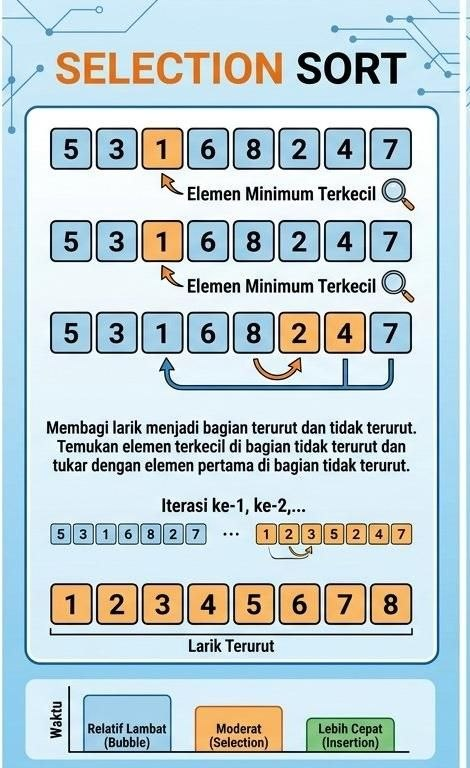

Selection Sort
Algoritma selection sort memiliki waktu komputasi yang lebih cepat dibandingkan dengan algoritma bubble sort. Hal ini dikarenakan terjadi reduksi waktu pada saat proses pertukaran data. Jika algoritma bubble sort, pada setiap iterasi,setiap dua data yang berdekatan akan dibandingkan, dan akan dilakukan pertukaran data jika syarat memenuhi. Maka pada algoritma selection sort tidak akan melakukan dua proses ini (perbandingan dan pertukaran) pada satu waktu, akan tetapi, pada algoritma selection sort, akan dicari data yang memenuhi syarat terlebih dahulu (perbandingan data), kemudian data yang terpilih ini ini akan
diletakkan pada indeks data yang tepat. Oleh karena itu algoritma ini dinamakan selection (pemilihan data).
Berikut tahapan algoritma selection sort (ascending order):
1. Algoritma ini dimulai dari indeks awal sampai dengan indeks akhir data
2. Cari data dengan nilai paling minimal (dari indeks awal sampai dengan indeks akhir) melalui proses perbandingan
3. Letakkan data minimal ini di indeks awal
4. Ulangi lagi proses pencarian data paling minimal (dari indeks awal+1 sampai dengan indeks akhir, karena indeks awal sudah terisi data yang tepat).
5. Letakkan data ini pada indeks awal+1
6. Ulangi lagi proses pencarian data paling minimal (dari indeks awal+2 sampai dengan akhir) dan letakkan data ini pada indeks awal+2, dst.

Implementasi Python:
#sectionsort
#dari kecil ke besar
lst = [4,7,1,9,3,10,6]
print(lst)
for i in range(0,len(lst)-1):
min=i
for j in range(i+1,len(lst)):
if lst[j]lst[min]:
min = j
lst[i],lst[min]=lst[min],lst[i]
print(lst)